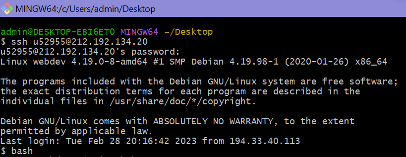
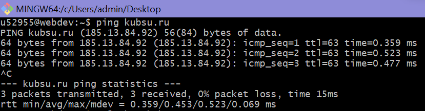
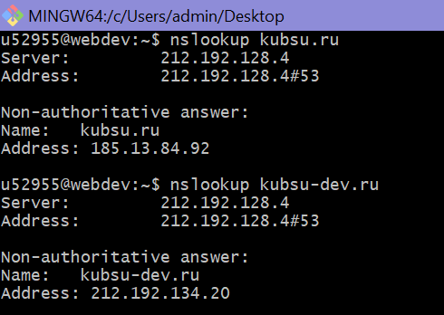
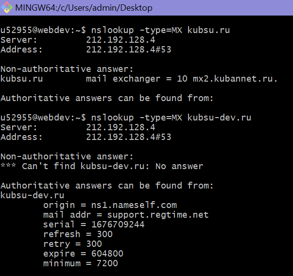
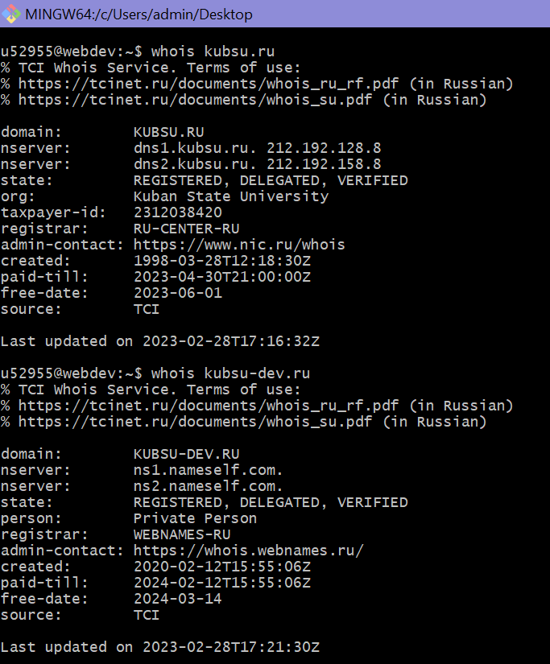
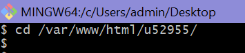
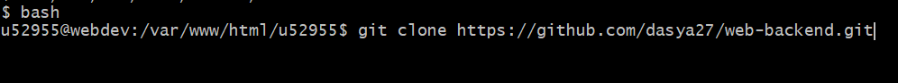
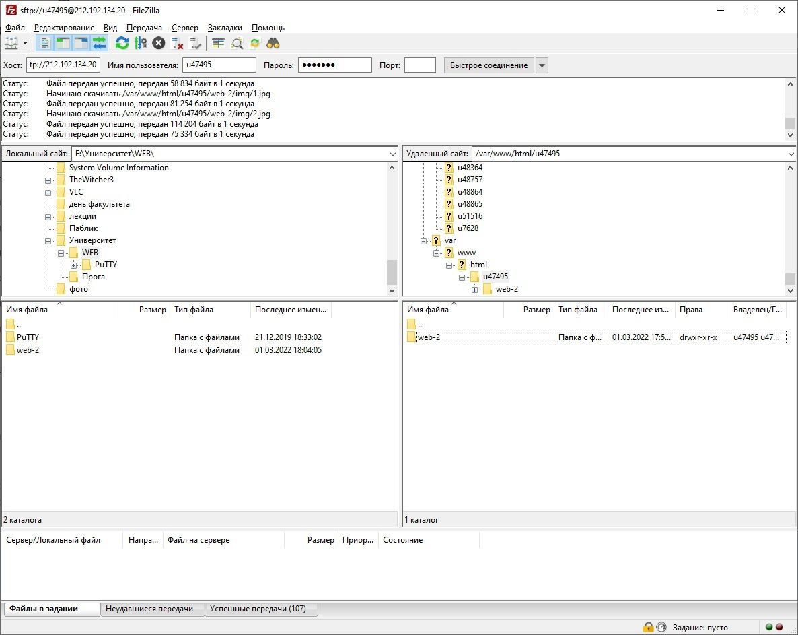

Задание 1
Подключение с серверу kubsu-dev.ru происходит при помощи Git Bush с использованием команды ssh.
1. Соединяемся с сервером по ssh: вводим логин и пароль.

Все подключилось, для дальнейшей работы также нужна команда bash.
2. Команда ping
Эта команда для проверки подключения. Она показывает, может ли удаленный компьютер подключиться
к серверу, а также задержку подключения:

3. Команда nslookup ( A-запись )
Команда nslookup позволяет узнать содержимое DNS
A-запись связывает сам домен и IP адрес. То есть такая запись позволяет найти IP:

4. Команда nslookup ( MX-запись )
MX -запись - это запись, которая указывает на сервер, который принимает посту для домена

5. Команда Whois
Команда whois используется для для проверки даты регистрации домена
Эта команда, кроме даты регистрации домена, показывает информацию о том, кому принадлежит домен,
дату истечения срока домена, расположение.

6. Создание и клонирование репозитория
Создаем репозиторий на github, загружаем необходимые файлы. Далеше нужно склонировоать репозиторий
на сервер.
Для этого нужно прописать путь к нужному каталогу.
Команда ниже перемещает нас в нужное место:

Затем, используя git clone, клонируем репозиторий:

Теперь сайт уже можно найти в поисковике по ссылке.
7. Использование FTP-клиента
В FTP-клиенте нужно ввести IP, логин и пароль, после этого произойдет подключение к серверу. Дальше нужно скачать
файлы на локальный компьютер.
Должно получиться так:

К сожалению, на моем компьютере при попытке подключения возникает ошибка. Причем
она не только в FileZilla, но и в других FTP клиентах.
8. Изменения
Чтобы делать изменения в репозитории, можно использовать git hub. Просто изменяя там то, что нужно.
Но затем в консоль нужно написать git pull. Это отправит все изменения на сервер и сайт обновится.